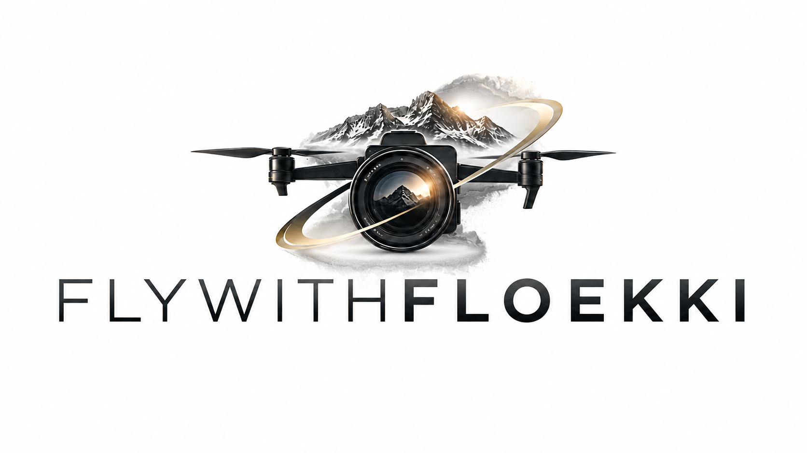
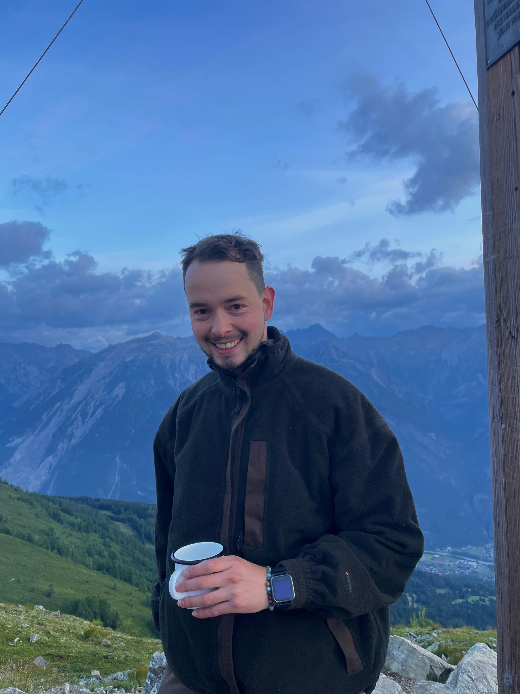

Firmenvideos & Werbung
Imagevideos, Social-Media-Clips, Firmenvorstellungen, Produkte und Dienstleistungen – modern, hochwertig und passend zu deinem Unternehmen.

Videograf & Videoproduktion · Tiroler Oberland · Landeck · Imst
Professionelle Videoproduktion in Tirol für Firmen, Events, Medien und besondere Momente – von klassischer Kamera bis Drohne & FPV.
Ich bin Florian und hinter Flywithfloekki steckt meine Begeisterung für starke Bilder, authentische Geschichten und Perspektiven, die im Kopf bleiben.
Als Videograf aus Schönwies im Tiroler Oberland bin ich für Produktionen in Landeck, Imst, ganz Tirol sowie auf Anfrage in Vorarlberg und Südtirol unterwegs – von der ersten Aufnahme bis zum fertigen Video.
Imagevideos, Social-Media-Clips, Firmenvorstellungen, Produkte und Dienstleistungen – modern, hochwertig und passend zu deinem Unternehmen.
Atmosphäre, Menschen und Highlights aus Veranstaltungen, Sport, Kultur, Vereinen und Firmen-Events.
Flexible Drehs für regionale Medien, Interviews, Beiträge und authentische Aufnahmen direkt vor Ort.
Ruhige Luftbilder mit klassischer Drohne und dynamische FPV-Flüge für Perspektiven, die vom Boden aus nicht möglich sind.
Emotionale, natürliche Erinnerungen an den Hochzeitstag – unaufdringlich aufgenommen und zu einem persönlichen Film zusammengeschnitten.
Aufnahme, Schnitt, Musik, Farbkorrektur, Ton, Einblendungen und Social-Media-Versionen – alles aus einer Hand.
Firmen, Veranstaltungen, regionale Berichterstattung und Social Media – eine Auswahl bereits umgesetzter Arbeiten.
Von Bauvorhaben und Hochzeiten über Werbe-, Image- und Fahrzeugvideos bis hin zu Events, Medienproduktionen und Fotografie: Inzwischen durfte ich bereits über 50 Projekte umsetzen. Dazu kommt auch reine Postproduktion – wenn vorhandenes Videomaterial geliefert wird, übernehme ich Schnitt, Farbkorrektur und den finalen Feinschliff.
Echte Rückmeldungen aus bereits umgesetzten Projekten.
Florian ist ein sehr motivierter Filmer mit einem guten Gespür dafür, was in einer Geschichte wichtig ist und wie man den roten Faden behält. Ich bin sehr froh, dass er Teil unseres Landeck TV Teams ist. Er ist ein wertvolles Mitglied, engagiert sich von Anfang an für unser Team und bringt auch immer wieder eigene Ideen ein. Außerdem ist er flexibel einsetzbar und packt dort mit an, wo er gebraucht wird. Ich schätze seine zuverlässige und motivierte Art sehr und freue mich, ihn in unserem Team zu haben.🤗
Es ist immer eine super Zusammenarbeit mit Florian. Wir als SK Schönwies haben immer ein großes internationales Nachwuchsfußballturnier in Schönwies, dies wurde auch dieses Jahr durch Florian gefilmt und begleitet. Wie auch unser legendäres Waldfest und der Starkenbacher Kirchtag. Gerade in der heutigen Zeit ist es wichtig, auf Social Media aktiv zu sein. Die Fotos und Videos von Florian geben unserer Social Media Präsenz einen hochkarätigen Charakter. Auch die Nachbereitung der Aufnahmen nach Veranstaltungen erfolgte bei Florian immer pünktlich und in einem hohem Qualitätsstandart. Mit seiner lockeren Art bringt Florian auch immer eine gute Stimmung mit. Vielen Dank für die Zusammenarbeit, wir hoffen, dass wir noch oft mit Florian zusammenarbeiten können! Noah Jenewein, im Namen des SK Schönwies.
„Die Zusammenarbeit mit Fly with Flökki funktioniert einfach super! Egal, ob wir ein Video für ein Musikstück beim Frühjahrskonzert brauchen, irgendwelche anderen Aufnahmen anstehen oder eine Berichterstattung gefragt ist – alles läuft unkompliziert und entspannt ab.
Die Aufnahmen aus der Luft sind jedes Mal ein Highlight und auch die persönlichen Interviews sind richtig gut gemacht. Die Berichterstattung wirkt authentisch und professionell, ohne dabei steif zu sein.
Kurz gesagt: Die Zusammenarbeit ist angenehm, unkompliziert und die Ergebnisse sprechen für sich. Wir freuen uns wieder auf gemeinsame Projekte mit Fly with Flökki!“
„Die Zusammenarbeit mit Florian und Flywithfloekki war von Anfang an absolut unkompliziert und professionell. Besonders schätze ich sein Engagement, seine Verlässlichkeit und die eigenen Ideen, die er in jedes Projekt mit einbringt.
Man merkt sofort, dass Florian nicht einfach nur filmt, sondern ein echtes Auge für gute Bilder, besondere Perspektiven und die richtige Stimmung hat. Mit den bisherigen Ergebnissen war ich vollumfänglich zufrieden und würde jederzeit wieder mit Flywithfloekki zusammenarbeiten.“
„Der Umgang war so herzlich und liebevoll, dass es sich eher wie ein Treffen mit Freunden angefühlt hat. Es wurde sich viel Zeit genommen, um das perfekte Licht und die besten Posen zu finden.
Die Bilder sehen absolut professionell, authentisch und überhaupt nicht gestellt aus. Auch der Umgang mit unserem Baby war absolut geduldig, spielerisch und entspannt. Am Tag selbst absolut pünktlich, top vorbereitet und tiefenentspannt, was uns unglaublich viel Sicherheit gegeben hat.
Eine klare Empfehlung für jeden, der hochwertige und nahbare Fotos sucht!“
„Florian arbeitet äußerst gewissenhaft, professionell und mit viel Leidenschaft. Er ist sehr kompetent und gleichzeitig ein ausgesprochen angenehmer Mensch. Dadurch war die Zusammenarbeit von Anfang bis Ende unkompliziert und flexibel.
Wir können Florian auf jeden Fall uneingeschränkt weiterempfehlen!“

Videograf aus dem Tiroler Oberland – offen für neue Ideen, flexibel in der Umsetzung und immer auf der Suche nach der nächsten besonderen Perspektive.
Mein beruflicher Weg begann eigentlich in einem ganz anderen Bereich: Ich habe die BAfEP in Zams abgeschlossen, anschließend Sozialpädagogik in Stams studiert und arbeite hauptberuflich als Sozialpädagoge. Die Arbeit mit Menschen begleitet mich also schon lange – und genau das hilft mir auch beim Filmen. Mir ist wichtig, dass sich Menschen vor der Kamera wohlfühlen und eine Zusammenarbeit unkompliziert, persönlich und auf Augenhöhe abläuft.
Meine Begeisterung fürs Filmen begann 2020 mit meiner ersten Drohne. Die ersten Videos habe ich noch am Handy und auf einem alten Laptop geschnitten. Seitdem habe ich mir Schritt für Schritt neues Wissen angeeignet, mein Equipment erweitert und mich immer weiter mit Kamera, Schnitt, Drohnen- und FPV-Aufnahmen beschäftigt.
Was mich bis heute begeistert? Momente und Erinnerungen festzuhalten, die bleiben. Gleichzeitig finde ich es spannend zu sehen, was ein gutes Video für ein Unternehmen oder eine Veranstaltung bewirken kann – wie viele Menschen damit erreicht werden können und wie stark bewegte Bilder eine Geschichte vermitteln.
Ich arbeite locker, zuverlässig und unkompliziert. Wünsche meiner Auftraggeber stehen für mich im Mittelpunkt, gleichzeitig bringe ich gerne eigene Ideen und einen frischen Blick mit. Professionelle Videoproduktion soll dabei nicht unnötig kompliziert sein: faire Preise, direkte Kommunikation und eine Zusammenarbeit, bei der man miteinander arbeitet.
Je nach Projekt kombiniere ich klassische Kamera, Gimbal, Drohne, FPV und Action-Cam – von der ersten Aufnahme bis zum fertigen Video.
Der genaue Preis richtet sich nach Umfang, Drehdauer, Anfahrt, gewünschter Produktion und Nachbearbeitung.
Projekt anfragenSchreib mir kurz, was du planst, wo der Dreh stattfindet und welches Ergebnis du dir vorstellst. Ich melde mich anschließend bei dir.